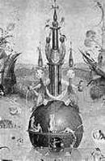
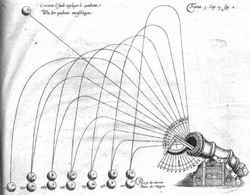

| inicio | | | | | @ | ||
Leonardo da Vinci (145- -1519)
Movimiento de proyectiles
Se atribuya a Galileo Galilei (1564–1642) la primera descripción acertada de la trayectoria de un objeto arrojado en ángulo. Cuando la resistencia del aire es despreciable, la curva es un arco de parábola.
Cuando el aire importa, por ejemplo al arrojar un bollo de papel al canasto, o al disparar un cañonazo, la trayectoria verdadera se aparta mucho de la parábola teórica. Entre los antiguos filósofos eso fue motivo de discusión, a veces oscurecida por no considerar la fuerza que ejerce el aire sobre el objeto en movimiento.
Lo curioso es que en forma simultánea con las polémicas de ingenieros, matemáticos, filósofos y artilleros, algunos aristas representaron curvas con una precisión gráfica notable, aparentemente sin conocimientos matemáticos avanzados. Un ejemplo es el de los chorros de las fuentes de El jardín de las delicias, del pintor flamenco Hieronymus Bosch, o El Bosco (1450–1516). Podemos calcar de sus pinturas parábolas casi perfectas, trazadas un siglo antes de Galileo.
|  |  |
Leonardo da Vinci, en sus instrucciones para los estudiantes de pintura, recomendaba representar el aire intermedio entre el objeto y el observador.
Él ya sabía, casi un siglo antes de Evangelista Torricelli, que el aire interpone una mayor masa cuando el objeto y el observador se encuentran al nivel del suelo, y menos cantidad cuando uno de ellos, o ambos, están elevados. Decía que el aire es más sutil en las alturas.
El arte a veces anticipa la ciencia, o la complementa. Pero a veces no nos damos cuenta de eso, porque oímos, vemos y leemos sólo lo que estamos dispuestos a creer o a considerar de antemano, según lo que esté de moda en ese momento.
| Publicado originalmente en Divagaciones vanas y ociosas sobre la física, el arte y la cultura, Agustín Rela, Buenos Aires, 2010, Aster Lingua. Se permite su reproducción citando la fuente. Última actualización may-2018. Buenos Aires, Argentina. |